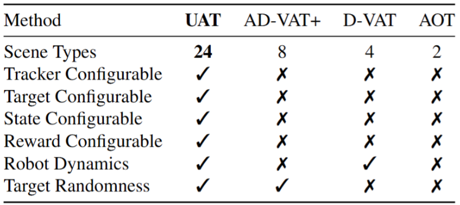
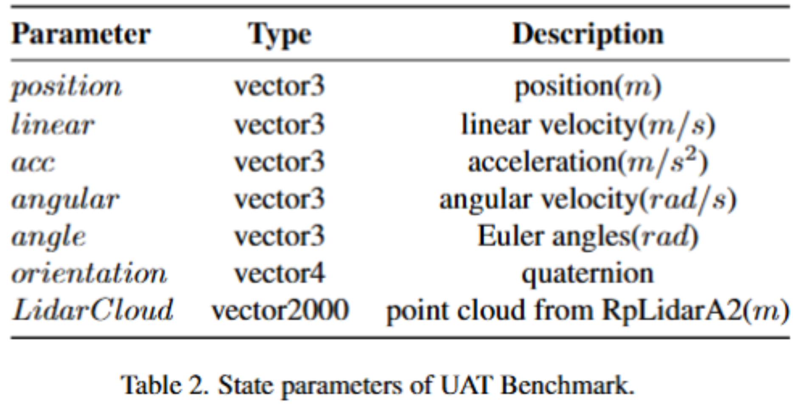
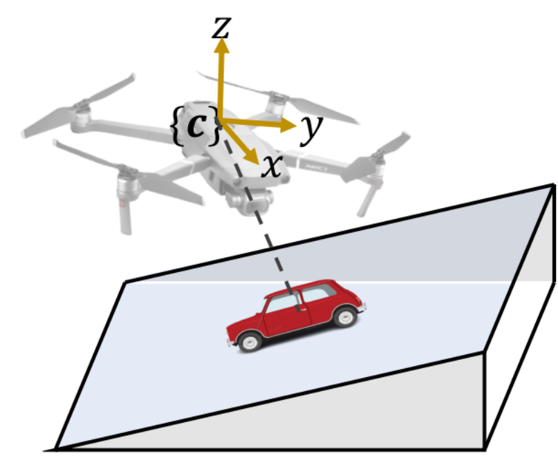
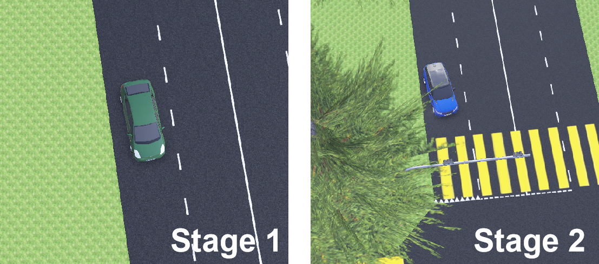
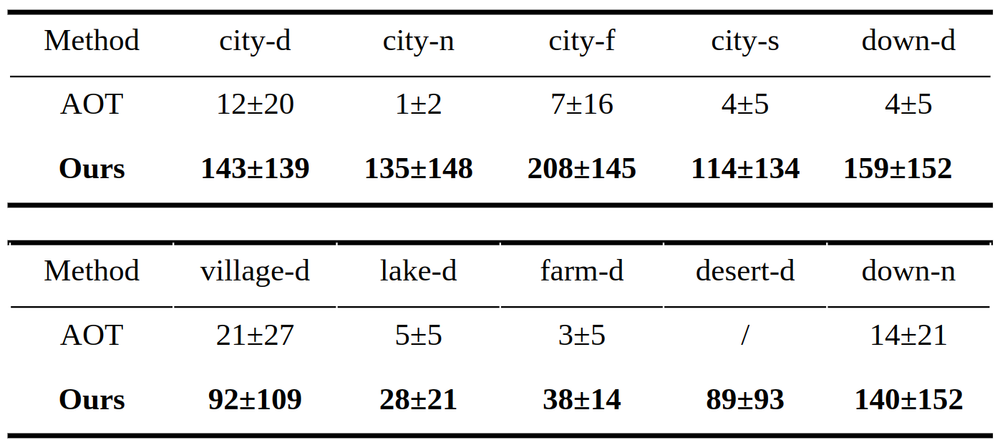
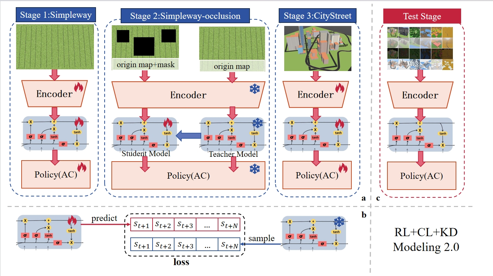

概述
1 问题定义与描述
VAT 工作定义
现实任务：现实视觉任务，目标具有高动态特性，主动控制相机以提升视觉准确率是主要挑战。
现有方法：现有 PVT (Passive Visual Tracking)方法基于目标在预设镜头内的假设，仅在视频维度进行跟踪。
VAT任务： VAT (Visual Active Tracking)同时建模视觉跟踪和控制，做到主动控制相机以追踪动态目标，更具现实意义。
VAT (Visual Active Tracking) 任务与 PVT (Passive Visual Tracking) 任务工作流
现有VAT方案局限
现有VAT方案: 直接串联VT模型与控制模型进行VAT，比如(siamask+PID)
局限性：
1.模型串联输入延迟: VT模型的延迟导致控制输入的滞后，甚至导致控制器发散
2.控制模型参数敏感: 控制模型对于参数敏感，需要对于每个不同场景进行参数微调
基于RL实现VAT的本项目工作特点
RL实现VAT项目特点：在本次项目中使用 RL模型 代替原有的VT与控制模型串联，基于方针实现模型训练，具备以下特点：
1.RL模型替代：利用 MDP (Markov Decision Process)同时对于视觉与控制任务进行建模，用单模型解决视觉与控制任务
2.仿真环境：由于RL现实环境试错与数据采集的高昂成本，构建具备多样性(多场景，多种tracker和target，多传感器)、复杂性(场景元素，target行为以及tracker动力学具复杂性)的仿真环境进行RL训练


不同方法仿真环境特征对比
2 Benchmark呈现
本项目特点如下：
仿真环境复杂多样
State可配置
Reward构建改进
复杂多样仿真环境
多样性：
场景多样：具备 6种场景 4种天气 共计 24 种环境的测试、训练场景，用于测试模型的 泛化 能力与 域泛化 能力
Target多样：预设 24种 可选target,支持自主模型接入
任务多样：具备多传感器，可执行多种任务
复杂性：
场景元素复杂：场景元素复杂，覆盖包括树遮挡, 隧道,红绿灯,人行道等常见场景元素
动力学模型复杂：利用 webots 高度仿真的动力学引擎，实现仿真环境中的复杂动力学模拟
Target行为管理复杂：接入交通仿真器 SUMO 以统一管理车辆， 确保环境中的 Target 动作的 真实性 和 随机性

6种场景+4种天气构成的24种 Scenes

24种不同的Targets
State可配置
多样性：状态提供了现实中常见的传感器，如IMU，加速度计，陀螺仪，激光雷达等进行配置
便捷性：通过JSON文件快速配置

可配置参数列表

Reward构建
现有方法：
利用 Target 相对于 Tracker 坐标直接构建 Reward， 如 \(r=A-\left ( \frac{1}{c}\sqrt{x^{2}+\left ( y-d \right )^{2}}+\lambda \left | \omega \right | \right )\)

现有方法reward图解
现有方法局限性：
利用了现实中不可获取的变量，在 Ｓim2Real 过程中难以对于现实场景微调
- 本文方法：
仅在图像层面构建 reward， 如下所示情景，构建reward依照 \(r=tanh(\alpha(1-x)^{2}),x=\frac{l_{IP}}{l_{IE}}\)

跟踪对象连续奖励示意图
详见： 内置Reward

3 实验方法与初步结果
Experiment Setting
普通实验：比较Agent的训练和迁移性能
模拟Sim2Real实验：利用DR在原场景中训练直接迁移 vs 在原场景训练+新场景微调 (说明reward可行性)

Stages示意图

Baseline Methods
Backbone:
CNN+LSTM+A3C 实现算法骨架
问题1:A3C算法的异步更新机制会导致算法快速收敛到单一动作分布，停止探索
问题2:One Stage的RL训练，智能体难理解任务
Ours: CL+PPO
CL：两阶段课程学习，第一阶段在视觉简单的情况下训练Agent的任务理解，第二阶段在任务理解的基础上泛化复杂视觉能力。
初步实验结果

初步实验结果

4 未来工作展望
时序决策
未来状态推演：智能体在跟踪全过程对目标未来状态进行演化
目标：克服遮挡干扰，提升可解释性

时序决策初步构想

智能体场景与域泛化性
场景与域泛化：智能体在跟踪全过程对目标未来状态进行演化
目标：克服遮挡干扰，提升可解释性
多传感器融合与多智能体协同
未来状态推演：智能体实现直接的跨场景泛化和跨天气情况(域)的泛化
目标：提升跨场景跨域性能，TTA+强化学习
实机部署与迁移
真机迁移：在真实的多场景多天气状况验证智能体的鲁棒性
目标：简化Sim2Real流程，适配多飞控部署